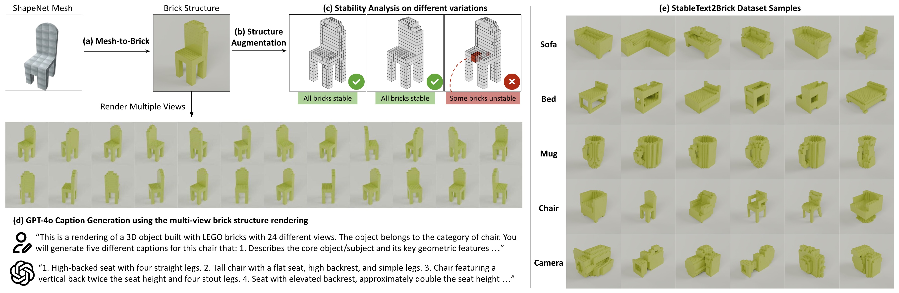

Overview
BrickGPT generates a toy brick structure from a user-provided text prompt in an end-to-end manner. Notably, our generated brick structure is physically stable and buildable.

Abstract
We introduce BrickGPT, the first approach for generating physically stable toy brick models from text prompts. To achieve this, we construct a large-scale, physically stable dataset of brick designs, along with their associated captions, and train an autoregressive large language model to predict the next brick to add via next-token prediction. To improve the stability of the resulting designs, we employ an efficient validity check and physics-aware rollback during autoregressive inference, which prunes infeasible token predictions using physics laws and assembly constraints. Our experiments show that BrickGPT produces stable, diverse, and aesthetically pleasing brick designs that align closely with the input text prompts. We also develop a text-based brick texturing method to generate colored and textured designs. We show that our designs can be assembled manually by humans and automatically by robotic arms. We also release our new dataset, StableText2Brick, containing over 47,000 brick structures of over 28,000 unique 3D objects accompanied by detailed captions, along with our code and models.
StableText2Brick Dataset
(a) From a ShapeNetCore mesh, we generate a brick design by voxelizing it onto a \(20\times 20 \times 20\) grid and applying legolization to determine the brick layout. (b) We augment each shape with multiple structural variations by randomizing the brick layout while preserving the overall shape. (c) Stability analysis is performed on each variation to filter out physically unstable designs. (d) To obtain the corresponding captions for each shape, we render the brick design from 24 different viewpoints and use GPT-4o to generate detailed geometric descriptions. (e) Data samples from 5 categories in our StableText2Brick dataset.
BrickGPT Pipeline
(a) Our system tokenizes a brick design into a sequence of text tokens, ordered in a raster-scan manner from bottom to top. (b) We create an instruction dataset pairing brick sequences with descriptions to fine-tune LLaMA-3.2-Instruct-1B. (c) At inference time, BrickGPT generates brick designs incrementally by predicting one brick at a time given a text prompt. For each generated brick, we perform validity checks to ensure it is well-formatted, exists in our brick library, and does not collide with existing bricks. After completing the design, we verify its physical stability. If the structure is unstable, we roll back to the stable state by removing all the unstable bricks and their subsequent ones and resume generation from that point.

Step by step generation of brick structures from text
Automated assembly of generated brick structures using robots (8x speed)
Generated brick structures assembled by humans
Generated textured brick models
Generated colored brick models
Citation
@article{pun2025brickgpt,
title = {Generating Physically Stable and Buildable Brick Structures from Text},
author = {Pun, Ava and Deng, Kangle and Liu, Ruixuan and Ramanan, Deva and Liu, Changliu and Zhu, Jun-Yan},
journal = {arXiv preprint arXiv:2505.05469},
year = {2025}
}Acknowledgements
We thank Minchen Li, Ken Goldberg, Nupur Kumari, Ruihan Gao, and Yihao Shi for their discussions and help. We also thank Jiaoyang Li, Philip Huang, and Shobhit Aggarwal for developing the bimanual robotic system. This work is partly supported by the Packard Foundation, Cisco Research Grant, and Amazon Faculty Award. This work is also in part supported by the Manufacturing Futures Institute, Carnegie Mellon University, through a grant from the Richard King Mellon Foundation. KD is supported by the Microsoft Research PhD Fellowship. The website template is taken from Custom Diffusion (which was built on DreamFusion's project page).